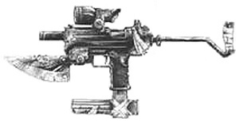

| Blunderbuss | ||
 | ||
|
||
| Ce fusil de chasse à canon scié a été modifié spécialement pour pouvoir tirer des munitions thermiques sans endommager les canons grâce à leur renforcement et à un refroidissement au CO2. |
| Fetcher Crossbow | ||
 | ||
|
||
| Dégâts : 3D6+2. Cette arbalète est équipée d'un treuil et est vendue avec 5 carreaux lames de rasoir (+1D6). CON minimale : 7. Un carquois standard peut contenir 12 carreaux. | ||
| Nomad Nuzi | ||
|  | ||
|
||
| Ce Micro Uzi a été modifié à tel point qu'il est méconnaissable. Se rencontre couramment chez les nomades. | ||
| Nomad Scrapper | ||
 | ||
|
||
| Comme les conversions intégrales et autres cyborgs commencent à être plus répandus dans la communauté nomade, il est devenu nécessaire d'avoir une arme pour les stopper. Ce pistolet fait main tire du 5,56 ce qui peut se relever utile à la fois contre les cyborgs et les véhicules. Malheureusement il n'est pas très fiable et à tendance à s'enrailler facilement. |